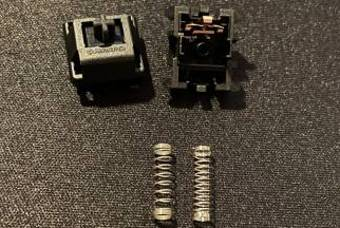
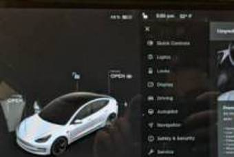

테크
흑축 기계식키보드 윤활, 스프링 교체 후기
키보드에 관심이 있으신 분들이라면, 또 기계식 키보드를 사용하시는 분들이라면 키보드 윤활이나 스프링 교체에 대해 알고 계실거예요. 기계식 키보드는 윤활을 통해 키보드에서 들리는 다양한 소음들을 잡아주어 더욱 정갈한 타건음을 만들 수 있는데요. 키보드 윤활 방식은 스위치를 분해하여 스프링과 스템부, 스테빌라이저까지 모두 윤활을 해주는 "풀윤활"과 스...
178cm
·
3일 전
테크
크롬 발목 잡으려는 'MS'의 꼼수
크롬(Chrome)은 명실상부 브라우저 시장의 1인자다. 각종 IT 관련 통계 자료를 제공하는 스탯카운터(StatCounter)에 의하면 2021년 11월 기준 전 세계 데스크톱 브라우저 시장에서 크롬의 점유율은 67.3%에 달했다. 2위는 점유율 9.92%를 기록한 사파리(Safari)로 1위와 격차가 크다. 마이크로소프트 엣지(Edge)는 그보다도 뒤처
테크플러스
·
1주일 전

테크
테슬라, "이제 차 안에서 원하는 기능 구독하세요"
테슬라 차주가 차량을 쉽게 업그레이드할 수 있게 됐다. 30일(현지 시간) 전기차 전문 매체 일렉트렉(electrek)은 테슬라가 차량 콘솔에서 최신 기능을 구매해 업그레이드 하거나 패키지를 구독할 수 있도록 소프트웨어를 업데이트했다고 보도했다. 차주는 원하는 기능과 서비스를 선택해 구매하거나 구독할 수 있다. △실시간 교통정보 △위성지도보기 △비디오 스트
테크플러스
·
2주일 전

테크
엔틱 감성 한 스푼...앱코 TW1867 타자기 키보드 리뷰
어렸을 때 집에 고장난 타자기가 있었다. 타자기 원리를 이해하기엔 너무 어렸지만, 키를 누를 때 경쾌하게 딸깍 소리가 나는 게 마냥 재미있어 장난감처럼 가지고 놀았던 기억이 난다. 앱코 TW1867 레트로 키보드를 보면 어렸을 때 가지고 놀던 그 타자기가 생각난다. 타자기를 닮은 TW1867 디자인은 누구라도 눈길을 줄 듯 독특함을 뽐낸다. 옛날 생각 나는
테크플러스
·
3일 전
테크 판의 컨텐츠는 ㈜테크플러스에 의해 운영·편집 됩니다.
새로운 글 더보기